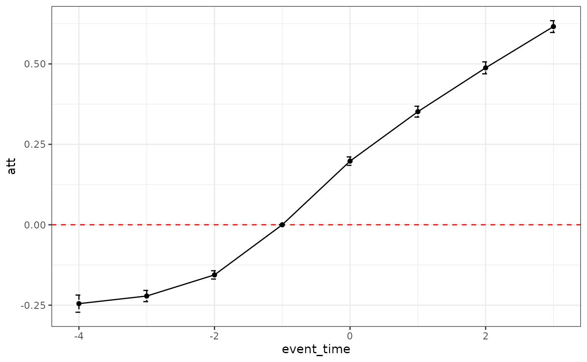

Here we show how to deal with confounding events, see Tsai (2024) for the full treatment. We first simulate some data with confounding events.
library(fastdid)
library(ggplot2)
library(data.table)
simdt <- sim_did(1e+04, 5, cov = "cont", hetero = "all", balanced = TRUE, seed = 1,
second_cohort = TRUE, second_het = "no") #comfounding event
dt <- simdt$dt #dataset
#ground truth att
att <- simdt$att |> merge(dt[,.(w = .N),by = "G"], by = "G")
att[, event_time := time-G]
att <- att[event == 1,.(att = weighted.mean(attgt, w)), by = "event_time"]Using the default estimator, the estimates (black line) is biased from the ground truth (red line).
naive_result <-fastdid(data = dt,
timevar = "time", cohortvar = "G", unitvar = "unit",
outcomevar = "y", result_type = "dynamic")
plot_did_dynamics(naive_result) +
geom_line(aes(y = att, x = event_time),
data = att, color = "red") + theme_bw()
Diagnostics can be obtained by using time >= G2 as
outcome. As we set the effect of the confounding event at 10 constantly,
we can see that the bias of the default estimator is roughly 10 times
the diagnostics.
dt[, D2 := time >= G2]
diag <- fastdid(data = dt,
timevar = "time", cohortvar = "G", unitvar = "unit",
outcomevar = "D2", result_type = "dynamic")
plot_did_dynamics(diag) + theme_bw()
Using the double did estimator with cohortvar2, the
estimator recovers the ground truth.
double_result <-fastdid(data = dt,
timevar = "time", cohortvar = "G", unitvar = "unit",
outcomevar = "y", result_type = "dynamic",
cohortvar2 = "G2", event_specific = TRUE)
plot_did_dynamics(double_result) +
geom_line(aes(y = att, x = event_time),
data = att, color = "red") + theme_bw()Double DiD also allow for two additional aggregation scheme: group-group-time (“group_group_time”) and dynamic-staggered (“dynamic_stagger”, event time by event stagger, G1-G2).
double_result_ds <-fastdid(data = dt,
timevar = "time", cohortvar = "G", unitvar = "unit",
outcomevar = "y", result_type = "dynamic_stagger",
cohortvar2 = "G2", event_specific = TRUE)
double_result_ggt <-fastdid(data = dt,
timevar = "time", cohortvar = "G", unitvar = "unit",
outcomevar = "y", result_type = "group_group_time",
cohortvar2 = "G2", event_specific = TRUE)